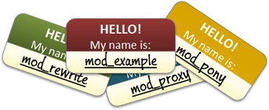

Infrastructure as Software
Code
Code = Snippet
var width=150; // width of the eyes in pixels
var colour="#06f"; // colour of the eye - bluey green in this case
var iris="#000"; // colour of the iris (normally black);
/***************************\
* Moving Eyeballs Effect *
*(c)2012-3 mf2fm web-design *
* http://www.mf2fm.com/rv *
* DON'T EDIT BELOW THIS BOX *
\***************************/
var swide=800;
function addLoadEvent(funky) {
var oldonload=window.onload;
if (typeof(oldonload)!='function') window.onload=funky;
else window.onload=function() {
...
Code = Snippet
# == Class: baseconfig
#
# Performs initial configuration tasks for all Vagrant boxes.
#
class baseconfig {
exec { 'apt-get update':
command => '/usr/bin/apt-get update';
}
host { 'hostmachine':
ip => '192.168.0.1';
}
file {
'/home/vagrant/.bashrc':
owner => 'vagrant',
group => 'vagrant',
mode => '0644',
source => 'puppet:///modules/baseconfig/bashrc';
}
}
Code = Script
#! /usr/bin/env python
class RequestHandler(BaseHTTPServer.BaseHTTPRequestHandler):
def do_POST(self):
content_length = int(self.headers['content-length'])
data = self.rfile.read(content_length)
self.send_response(200)
self.end_headers()
self.wfile.write("accepted.\n")
self.wfile.close()
now = int(time.time())
filename = os.path.join(REPORT_DIR, "report-%s.yaml" % (now,))
fd = os.open(filename, os.O_EXCL|os.O_CREAT|os.O_WRONLY)
os.fdopen(fd, "w").write(data)
def main():
logging.basicConfig(format="%(asctime)s %(message)s", level=logging.DEBUG)
SocketServer.TCPServer.allow_reuse_address = True
httpd = SocketServer.TCPServer(("", PORT), RequestHandler)
httpd.serve_forever()
main()
My friend Clift Norris has identified a fundamental constant that I call Norris’ number, the average amount of code an untrained programmer can write before he or she hits a wall. Clift estimates this as 1,500 lines. Beyond that the code becomes so tangled that the author cannot debug or modify it without herculean effort.-- John D. Cook
Software in Puppet?
Let me tell you a story..tinyurl.com/puppetagain
Meet PuppetAgain
- Open Source
- Written in Puppet
- Cross-Platform
- Highly Available
- Secure
- Designed to Manage Job-Runners
Software
- Architectural models
OpenStack Architecture

Approachability
If I change this, what will happen?
Where should I start reading code?
PuppetAgain: Toplevel
class toplevel::base {
include users::root
}
class toplevel::server inherits toplevel::base {
include puppet::periodic
include cron
}
class toplevel::server::mozpool inherits toplevel::server {
include bmm
include mozpool
}
PuppetAgain: Toplevel
node "mobile-imaging1.p1.releng.scl3.mozilla.com" {
include toplevel::server::mozpool
}
PuppetAgain: Configuration
# modules/config/manifests/base.pp
class config::base {
$ntp_server = ''
}
# manifests/moco-config.pp
class config inherits config::base {
$ntp_server = 'time.mozilla.org'
}
PuppetAgain: Configuration
class ntp::config {
include ::config
if ($::config::ntp_server) {
..
}
}
Software
- Architectural models
- Controlled Interdependencies
Apache: Modules
PuppetAgain: Dirs
class dirs::builds {
file { "/builds": ensure => directory; }
}
class dirs::builds::slave {
include dirs::builds
file { "/builds/slave": ensure => directory; }
}
PuppetAgain: Dirs
class talos {
include dirs::builds::slave
file {
"/builds/slave/talos-slave":
ensure => directory;
}
}
Software
- Architectural models
- Controlled Interdependencies
- Organizing Principles
PA: Principle of Least Surprise
include mig_agent::install
.. installs mig-agent
.. or dies trying
PA: Principle of Least Surprise
class mig_agent::install {
case $operatingsystem {
CentOS: { .. }
default: {
fail("Cannot install on $operatingsystem")
}
}
}
Software
- Architectural models
- Controlled Interdependencies
- Organizing Principles
- Abstractions
Puppet: Packages
package {
'httpd':
ensure => '2.2.15';
}
PuppetAgain: Packages
include packages::httpdPuppetAgain: Packages
class packages::httpd {
case $::operatingsystem {
CentOS: {
package { "httpd": ensure => latest; }
}
Ubuntu: {
package { "apache2": ensure => latest; }
}
Darwin: {
# installed by default
}
default: {
fail("cannot install on $::operatingsystem")
}
}
}
Writing Software
is Hard
Challenges
- Package repositories are part of the code
Repositories:
Pinning is Hard
- Un-specified prerequisite packages aren't pinned
- Can confuse package managers
- Modifying the repo makes production changes
Repositories:
Mirroring is Hard
Can we update mirrors now?
No.
Repositories:
Sharing is Hard
Repositories:
They're Huge
[root@releng-puppet2.srv.releng.scl3.mozilla.com dmitchell]# df -h /data
Filesystem Size Used Avail Use% Mounted on
/dev/mapper/vg_relengpuppet2-lv_data
414G 315G 78G 81% /data
Challenges
- Package repositories are part of the code
- Interactions are hard to model
Module Interactions
- 'httpd' module installs Apache
- 'rsyslog' module installs rsyslog
- When both are installed, we want to send access logs to rsyslog
Module Interactions
class httpd::logging {
include rsyslog::config_dir
file {
"${rsyslog::config_dir::dir}/httpd.conf":
content => template("${module_name}/rsyslogd_httpd.conf.erb");
}
}
Challenges
- Package repositories are part of the code
- Interactions are hard to model
- Acceptance-level testing is hard